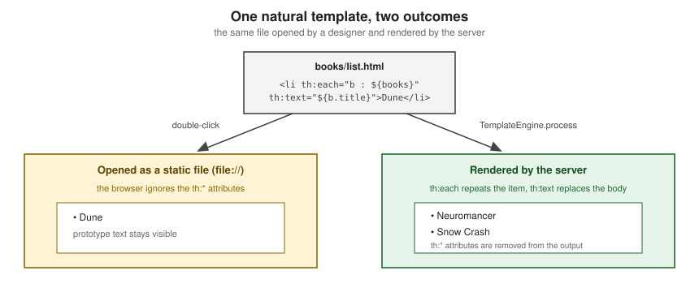
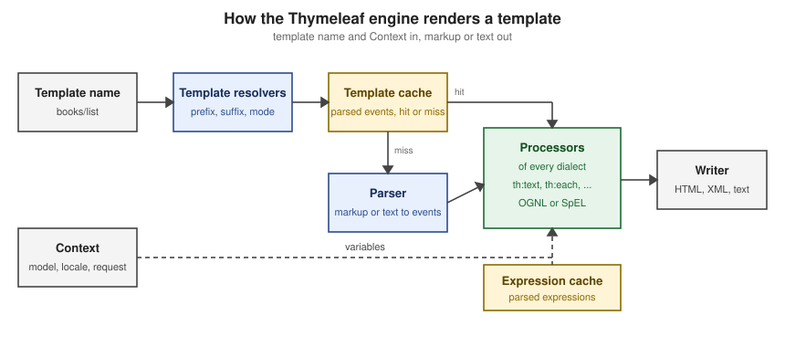

Introduction & Architecture
|
This content was generated with the assistance of AI and should be verified against the official documentation before being relied on in production. |
This page is written against Thymeleaf 3.1.5.RELEASE (published on 2026-04-21, the latest release on 2026-10-07 when
the facts and examples below were checked), Spring Boot 4.1.1 with Spring Framework 7.0.9, Java 21 or later, Layout
Dialect 4.0.1, htmx 2.0.x and htmx-spring-boot 5.2.0. The concepts apply to Thymeleaf standalone, with Spring MVC
and with Spring WebFlux; where one of them behaves differently the text says so. The examples were executed in a
scratch Spring Boot 4.1.1 project on Java 21; each one is followed by the official page it derives from. The page
explains what Thymeleaf is made of and where it fits, before the rest of the section builds the Bookshelf — a
catalogue of books, authors, reviews and loans rendered on the server with Spring MVC and Thymeleaf — one concept at
a time.
What Thymeleaf Is
The official tutorial describes Thymeleaf as a modern server-side Java template engine for both web and standalone environments, capable of processing HTML, XML, JavaScript, CSS and plain text. Three consequences follow from that sentence.
-
It is a template engine, not a web framework. It receives a template name and a set of variables and writes text. Routing, request binding, validation, security and persistence come from the host framework, normally Spring MVC or Spring WebFlux through Spring Boot.
-
It is server-side. The template is evaluated on the JVM before anything reaches the browser, so the browser receives finished markup and never sees the
th:*attributes. -
It runs in standalone programs too. The same engine renders HTML pages, e-mail bodies, reports or generated source code without a servlet container, which the next pages of this section use for configuration (Standalone Engine & Configuration) and e-mails (Emails & Text Templates).
Thymeleaf is free software under the Apache License 2.0, and its FAQ describes it as a complete substitute for JSP and JSTL. Its goal, in the words of the tutorial, is an elegant and highly maintainable way of creating templates, built on the concept of natural templates.
Natural Templates
A template is natural when the engine’s logic is added in a way that does not stop the file from being used as a
design prototype. Most processors of the Standard Dialect are attribute processors, and a browser ignores attributes
it does not know, so the file still displays correctly when it is opened directly from disk. The tutorial contrasts it
with a JSP, where a tag library element such as <form:inputText .../> is not displayable by a browser.
The example below is a text input with a prototype value that the designer sees and an expression that the server evaluates.
<input type="text" name="title" value="Dune" th:value="${book.title}">With book.title equal to Neuromancer the engine writes the following. The prototype value is replaced and the
th:value attribute disappears:
<input type="text" name="title" value="Neuromancer">
Natural templating matters for two reasons. Designers and developers can work on the same file, so the cost of turning a static prototype into a working page is small. And the template stays honest: a page that renders without the server is much easier to review, restyle and test in a browser. The official article Thymeleaf vs. JSP in Spring MVC builds the same form with both technologies and makes the same point: a JSP cannot be previewed without a running, deployed server, a Thymeleaf template can.
Natural templating is a property of how you write the template, not an absolute guarantee. Using
th:utext, inlined expressions such as [[${title}]] in text, or fragments that only make sense inside a layout
makes the raw file less presentable. Later pages of this section (Natural Templates & Decoupled Logic) show the trade-offs, including the
th:remove and prototype-only comment blocks that keep a prototype tidy.
The Six Template Modes
Out of the box Thymeleaf processes six kinds of templates, each called a template mode: HTML, XML, TEXT,
JAVASCRIPT, CSS and RAW. They are the values of the org.thymeleaf.templatemode.TemplateMode enumeration, and a
template resolver chooses the mode of every template it resolves.
| Mode | What it is for | Notes |
|---|---|---|
|
HTML5, HTML 4 and XHTML input. The default for Thymeleaf-aware resolvers. |
No validation and no well-formedness check. The template structure is respected as far as possible in the output. |
|
XML input. |
The input must be well formed (no unclosed tags or unquoted attributes) or the parser throws an exception. There is no validation against a DTD or schema. |
|
Templates of a non-markup nature such as text e-mails or generated documentation. |
Uses a special textual syntax. HTML or XML processed as |
|
JavaScript files in the application. |
A textual mode with JavaScript-specific integrations such as specialised escaping and natural scripting. |
|
CSS files in the application. |
A textual mode, like |
|
Inserting untouched resources. |
No processing at all. Thymeleaf code that the inserted resource contains is never executed. |
The sketch below renders one small template in every mode, using the same variables. Note how the output depends on
the mode: HTML escaping in HTML, XML and TEXT, a serialised string literal in JAVASCRIPT, a plain value in
CSS, and nothing evaluated in RAW.
Context ctx = new Context();
ctx.setVariable("title", "Dune <1965>");
ctx.setVariable("color", "tomato");
StringTemplateResolver resolver = new StringTemplateResolver();
resolver.setTemplateMode(mode); // one of TemplateMode.values()
TemplateEngine engine = new TemplateEngine();
engine.setTemplateResolver(resolver);
String out = engine.process(template, ctx);| Mode | Template | Output |
|---|---|---|
|
|
|
|
|
|
|
|
|
|
|
|
|
|
|
|
|
the template, unchanged |
The table shows the stored template text and the exact output of the run. The JAVASCRIPT and CSS templates stay valid
scripts and style sheets when opened without Thymeleaf because the expression sits in a comment followed by a
prototype value: the textual modes are natural too, and they are the subject of the Textual Template Modes page.
Dialects, Processors and the Standard Dialects
Thymeleaf is, in the words of the tutorial, extremely extensible, so much that it could be called a template engine framework. Two terms carry the design:
-
A processor is an object that applies some logic to a markup artifact: a tag, a block of text, a comment, or a placeholder when the template is not markup.
-
A dialect is a set of processors, plus perhaps other artifacts, registered under a prefix. A dialect can even have no processors at all.
The Standard Dialect, defined in the core library, provides the attributes and the expression syntax that this whole
section teaches: th:text, th:each, th:if, th:href, th:object, th:insert and the rest, together with the
five expression types (variable ${...}, selection *{...}, message #{...}, link @{...} and fragment ~{...}).
The Spring integration adds the SpringStandard Dialect, which is mostly the same but adapted to Spring. The visible
difference is the expression language of ${...} and *{...}:
| Standard Dialect | SpringStandard Dialect | |
|---|---|---|
Where it comes from |
|
|
Variable expressions |
OGNL |
Spring Expression Language (SpEL) |
Typical host |
Standalone programs and plain servlets |
Spring MVC and Spring WebFlux |
Thymeleaf 3.1.5 still ships OGNL as a dependency of the core artifact, which is why ognl appears in the Maven
dependency tree of a Spring Boot application even though the Spring integration evaluates with SpEL. In a Spring
application, use SpEL syntax, because that is what runs.
Dialects registered in a Spring Boot application
A Spring Boot application registers every dialect it finds. The scratch project of this page has the Layout Dialect,
the htmx dialect of htmx-spring-boot-thymeleaf and Spring Security’s sec: dialect on its classpath, and listing the
dialects of the auto-configured SpringTemplateEngine shows each of them next to the SpringStandard Dialect:
@Autowired SpringTemplateEngine springEngine;
@Autowired ThymeleafViewResolver viewResolver;
@Test
void springEngineDialects() {
springEngine.getDialects().forEach(d -> System.out.println(d.getName()));
System.out.println(viewResolver.getClass().getName());
}The run printed SpringStandard, Htmx, SpringSecurity and Layout (plus a dialect of the scratch project itself)
and the view resolver class org.thymeleaf.spring6.view.ThymeleafViewResolver. The Spring Boot Auto-configuration & Properties page
explains how those beans are created.
Writing a dialect
Because the Standard Dialect is itself only a dialect, the engine can host your own. A dialect is registered with
TemplateEngine.addDialect; an attribute processor receives the host tag and its attribute value and acts on the
element through a handler. The following minimal dialect adds an up:shout attribute that replaces the element body
with the upper-cased attribute value. It is a deliberately tiny illustration of the extension model, which the
Extending Thymeleaf page covers in depth with the official tutorial’s sample dialects.
class UpperDialect extends AbstractProcessorDialect {
UpperDialect() { super("Upper dialect", "up", 1000); }
@Override
public Set<IProcessor> getProcessors(String prefix) {
return Set.of(new AbstractAttributeTagProcessor(
TemplateMode.HTML, prefix, null, false, "shout", true, 1000, true) {
@Override
protected void doProcess(ITemplateContext context, IProcessableElementTag tag,
AttributeName attributeName, String attributeValue,
IElementTagStructureHandler structureHandler) {
structureHandler.setBody(attributeValue.toUpperCase(), false);
}
});
}
}
TemplateEngine engine = new TemplateEngine();
engine.setTemplateResolver(resolver);
engine.addDialect(new UpperDialect());
engine.process("<p up:shout=\"hello\">x</p>", new Context()); // <p>HELLO</p>The engine then holds two dialects, Standard and Upper dialect; the first is registered by default and several
dialects can be active at once.
Source: Extending Thymeleaf
th:* versus data-th-*, and the xmlns:th Namespace
Every Standard Dialect attribute can be written in two equivalent notations. The namespaced form th:text is the one
used throughout this documentation. The HTML5-friendly form data-th-text follows the standard data-{prefix}-{name}
convention for custom attributes, so the template is valid HTML5 with no namespaced names. The tutorial adds that
the syntax is available to all dialects, not only the Standard one, that custom elements follow the {prefix}-{name}
form (th-block is the same as th:block), and that there is no intention to deprecate the namespaced syntax. The
th:* notation is the general one and works in every template mode, while the data- notation is allowed only in the
HTML mode.
<p th:text="${t}">x</p>
<p data-th-text="${t}">x</p>With t equal to Dune both lines produce <p>Dune</p>; the run compared the two outputs and they were identical.
The xmlns:th="http://www.thymeleaf.org" declaration that many templates carry on the <html> element has no influence
on processing. It only stops an IDE from complaining about unknown th:* attributes. It can be omitted, and the
data-th-* notation avoids the need for it, but Spring Boot starters and the official examples keep it for editor
support.
From HTML to HTML, via HTML
Why does Thymeleaf offer both a lenient HTML mode and a strict XML mode? The official article
From HTML to HTML (via HTML) tells the story. HTML grew out of SGML, browsers
were forgiving of malformed markup, XHTML demanded well-formed XML, and HTML5 returned to an error-tolerant syntax
with specified error handling and no DTD. Thymeleaf’s HTML mode follows the HTML5 outlook: it accepts HTML5, HTML 4
and XHTML without checking well-formedness, while the XML mode is available for the cases where a strict XML
document is needed. In practice, write HTML5 templates (<!DOCTYPE html>) in HTML mode and reserve XML mode for
feeds and other XML documents.
The Engine Pipeline and Its Caches
When an application asks the engine to render a template, four things happen in order, drawn in the figure below.
-
Resolution. One or more template resolvers (
org.thymeleaf.templateresolver.ITemplateResolver) turn a template name such asbooks/listinto an actual resource and decide its template mode. Spring Boot configures aSpringResourceTemplateResolverwith the prefixclasspath:/templates/and the suffix.html. -
Parsing. The parser reads the template with parsers for markup and for text and produces a sequence of events (open tag, text, close tag, comment and so on). The markup parser of the engine is AttoParser, the
attoparserartifact on the Thymeleaf dependency list. -
Processing. Processors, one for each kind of behaviour, modify the event sequence by combining the original template with the data in the
Context. Expressions are evaluated at this stage, with OGNL or SpEL. -
Output. The resulting events are written to a
Writer.

Thymeleaf keeps two caches, managed by a StandardCacheManager by default. The template cache stores the
event sequences of parsed templates, because cloning an in-memory sequence is much quicker than reading a file and
parsing it again; the tutorial reasons that web applications have only a few dozen small templates that do not change
while the application runs. The expression cache stores parsed expressions. The official javadoc gives the defaults:
200 entries for the template cache and 500 for the expression cache. Caching can be switched off per resolver
(setCacheable(false)) and individual entries can be evicted:
StandardCacheManager cacheManager = new StandardCacheManager();
cacheManager.setTemplateCacheMaxSize(100); // default 200
cacheManager.setExpressionCacheMaxSize(300); // default 500
engine.setCacheManager(cacheManager);
engine.process("intro/search", ctx); // parses the template, one cache entry
engine.clearTemplateCache(); // empties the template cache
engine.clearTemplateCacheFor("intro/search"); // or removes a single templateAfter the first call, the run reported one entry in the template cache and two in the expression cache; after
clearTemplateCache() the template cache was empty. Spring Boot exposes the switch as spring.thymeleaf.cache, which
defaults to true and is usually set to false only in a development profile, so a template edit shows up without a
restart. The Performance & Production and Getting Started pages return to this.
Source: Using Thymeleaf — Template Cache
Two further points belong to the processing stage. First, since 3.1 every expression is subject to general class
restrictions, and a stricter restricted mode applies in contexts where the input is less trusted, such as
preprocessing, unescaped output with th:utext, th:on* event attributes, fragment names and parameters, and the
URL base; Appendix D of the tutorial lists them and the Template Security & XSS page covers the details. Nothing on this
page uses those contexts. Second, template problems surface as exceptions at render time and not at start-up: a syntax error in a template raises
a TemplateInputException ("An error happened during template parsing"), and the parser of the XML mode throws
exceptions when the input is not well formed.
Standalone, Spring MVC and Spring WebFlux
The Spring integration lives in org.thymeleaf:thymeleaf-spring6 (no thymeleaf-spring7 exists on Maven Central; Spring
Framework 7 applications use the same artifact, which is what the Spring Boot 4.1.1 dependency tree resolves). It
supplies:
-
SpringTemplateEngine(org.thymeleaf.spring6), which applies the SpringStandard Dialect automatically and enables Spring’sMessageSourcefor message resolution; -
SpringResourceTemplateResolver, which integrates with Spring’s own resource resolution; -
ThymeleafViewResolver(org.thymeleaf.spring6.view), the Spring MVCViewResolverthat turns the view name a controller returns into a Thymeleaf-rendered response; -
ThymeleafReactiveViewResolver(org.thymeleaf.spring6.view.reactive), the WebFlux counterpart. It supports three modes: FULL (the whole output is generated in memory and sent at once), CHUNKED (output in chunks no larger than a configured maximum, with backpressure) and DATA-DRIVEN (markup rendered as a reactive data stream arrives).
The tutorial Thymeleaf + Spring covers Spring MVC; it has no WebFlux chapter, so reactive rendering is documented in the
thymeleaf-spring6 javadoc and the Spring documentation, and this section treats it on the Reactive Rendering with WebFlux page. Spring Boot
selects the right configuration for a servlet or reactive application through ThymeleafAutoConfiguration.
| Environment | Entry point | Where this section covers it |
|---|---|---|
Standalone |
|
the standalone-engine page and the e-mail page |
Spring MVC |
a |
the Spring MVC pages and every page’s examples |
Spring WebFlux |
a handler returning a view name, resolved by |
the reactive page |
Spring Boot in Two Minutes
A Spring Boot web application is the usual host for Thymeleaf, so a few Spring concepts come up on every page. They are documented elsewhere on this site; the table maps each one to the Thymeleaf feature that uses it.
| Spring concept | What it gives a Thymeleaf application | Documented in |
|---|---|---|
Dependency injection and beans |
Controllers, services and repositories are beans injected by constructor. Thymeleaf’s beans (the engine, the view resolver, dialects) are beans too, so you add a dialect or a template resolver by declaring a bean. |
|
Spring MVC |
|
|
Spring Data |
Repositories supply the entities that templates iterate over. |
|
Spring Security |
Authentication, CSRF protection and the |
|
Starters and dependency management |
|
|
Configuration |
|
A project is created with Spring Initializr and started with ./mvnw spring-boot:run; the
next page of this section, Getting Started, walks through the generated layout (src/main/resources/templates and
static) and the first controller. Here is the smallest useful slice of the Bookshelf, a controller and a template
that the scratch project compiled and tested:
@Controller
@RequestMapping("/books")
public class BookController {
private final BookRepository repo;
public BookController(BookRepository repo) { this.repo = repo; }
@GetMapping
public String list(Model model) {
model.addAttribute("books", repo.findAll());
return "books/list"; // resolved to classpath:/templates/books/list.html
}
}<ul>
<li th:each="b : ${books}" th:text="${b.title}">Dune</li>
</ul>Server-Side Rendering, SPAs and Server-Driven UI
Thymeleaf is one way of building the user interface of a web application, and it helps to place it among the others.
| Approach | Where the HTML is produced | Typical trade-off |
|---|---|---|
Server-side rendering (Thymeleaf, JSP, FreeMarker) |
On the server, per request, from templates and a model. |
Simple deployment, good first load and search-engine friendliness, one language on the server; every interaction is a round trip unless it is enhanced. |
Single-page application (React, Vue, Angular) |
In the browser, from JSON fetched from an API. |
Rich client behaviour, a separate front-end build and a JSON API to secure and version. |
Server-driven UI (Vaadin) |
The UI is written in Java on the server and the framework synchronises the browser. |
No hand-written front end for typical business screens; server session state per user. |
Hypermedia-driven (Thymeleaf plus htmx) |
On the server, but in fragments that htmx swaps into the page. |
Server rendering with partial-page updates and little JavaScript. |
The site has pages for the neighbouring choices. The Vaadin architecture page describes the server-driven alternative, and Server-Side Web UI Frameworks compares Thymeleaf, Vaadin and JSF inside a Spring Boot application. The Java server-side page technologies that predate Thymeleaf have sections of their own: JSF in the JSF (JavaServer Faces) section, and JSP and Struts in the JSP & Struts section. GWT, which compiles Java to JavaScript, has its own GWT (Google Web Toolkit) section.
Where htmx fits
htmx is a small JavaScript library that lets any element issue an HTTP request and swap the HTML that comes back into
the page, all declared with hx-* attributes. The htmx essay
Hypermedia-Driven Applications defines the style: interactions
are declared in HTML attributes instead of imperative scripts, and the server exchanges HTML (hypermedia) with the
client instead of JSON. That fits Thymeleaf well, because a Thymeleaf template can render either a whole page or only
a fragment of it from the same file.
The example below is one endpoint that returns the full page for a normal request and only the results fragment when
htmx sends its HX-Request header. The hx-get button asks for the fragment and hx-target/hx-swap replace the
list:
<!DOCTYPE html>
<html xmlns:th="http://www.thymeleaf.org">
<head>
<meta charset="UTF-8">
<title>Search</title>
<script src="https://cdn.jsdelivr.net/npm/htmx.org@2.0.11/dist/htmx.min.js"></script>
</head>
<body>
<button hx-get="/search" hx-target="#results" hx-swap="outerHTML">Refresh</button>
<ul id="results" th:fragment="results">
<li th:each="b : ${books}" th:text="${b.title}">Prototype title</li>
</ul>
</body>
</html>@GetMapping("/search")
public String search(Model model,
@RequestHeader(name = "HX-Request", required = false) String hxRequest) {
model.addAttribute("books", repo.findAll());
// both view names are constants, never built from request input
return hxRequest != null ? "intro/search :: results" : "intro/search";
}A request without the header produced the complete document starting with <!DOCTYPE html>; a request with
HX-Request: true produced only the <ul id="results"> element. In a real application the
htmx-spring-boot library gives @HxRequest and related annotations that make this negotiation declarative.
The books of the same author add two companions that the htmx-era Spring stack keeps recommending: Alpine.js for the small pieces of client state that do not belong on the server, following the htmx project’s "Locality of Behavior" principle, and Tailwind CSS for styling. The same essay lists hyperscript, Alpine.js and inline vanilla JavaScript as ways of keeping such scripting next to the markup it affects. This site documents Tailwind in its own Tailwind CSS section; the Styling & Front-end Assets page covers assets, WebJars and live reload, and the Tooling & IDE Support page the editor plugins.
Thymeleaf Compared with Other Template Engines
The table compares Thymeleaf with engines on the JVM and with the engines of the other stacks documented on this site. Each row was checked against the engine’s own documentation on 2026-10-07; the "Compared with Thymeleaf" column is a summary of the difference, not a ranking.
| Engine | What its documentation says | Compared with Thymeleaf |
|---|---|---|
Jakarta Pages (JSP) with JSTL |
A template engine for web applications that mixes text with custom tags, expression language and embedded Java; the result is compiled into a Jakarta Servlet. Jakarta Pages 4.0 belongs to Jakarta EE 11. |
Not natural: a JSP cannot be previewed without a server. Spring Boot’s reference says JSPs should be avoided when possible because of known limitations with embedded servlet containers, and Thymeleaf is the usual replacement. See JSP, EL & JSTL. |
Apache FreeMarker |
A Java library to generate text output (HTML pages, e-mails, configuration files, source code), not limited to web use. |
Directive-based syntax that is not natural HTML; strong in text generation. Auto-configured by Spring Boot. |
Mustache |
"Logic-less templates", with a specification and implementations such as Mustache.java and JMustache. |
Deliberately minimal and portable across languages; no expression language or dialects. Auto-configured by Spring Boot. |
Groovy templates ( |
An optimised engine for XML-like markup and other text; templates are Groovy code in a builder DSL that compiles to bytecode, with optional type checking, layouts and includes. Auto-escaping is off by default. |
Templates are code rather than markup; very flexible, not natural. Auto-configured by Spring Boot. |
JTE |
"A secure and lightweight template engine for Java and Kotlin" with typesafe templates, compile-time escaping, precompiling and hot reload, and integrations for Spring Boot, Spring Web MVC, Quarkus, Javalin and others. |
Expressions are plain Java checked by the compiler, where Thymeleaf expressions are checked at render time. Not among the engines Spring Boot auto-configures. |
Pebble |
A Java templating engine inspired by Twig, with a syntax similar to Python’s Jinja, template inheritance, extensible tags and filters, autoescaping and internationalisation. |
A familiar Twig and Jinja style with inheritance built in; not natural HTML. |
Qute |
The Quarkus templating engine, with build-time validation of typed templates, reduced reflection for native images and immediate template reload in dev mode. |
Tied to Quarkus. See Qute Templating on this site. |
Django templates |
The Django template language: variables, tags, filters and comments, with a Jinja2 backend as an alternative. |
Tag-based rather than attribute-based; see Django Templates. |
Jinja2 |
"A fast, expressive, extensible templating engine" with Python-like placeholders. |
Very close in spirit to Pebble. See the Jinja2 section of Static Files, Templates & Frontend. |
Laravel Blade |
All Blade templates are compiled into plain PHP code and cached until they are modified. |
Directives and components rather than attributes; see Blade Templates. |
ASP.NET Core Razor |
A markup syntax for embedding .NET code into webpages, with the |
C# in the template; see Razor Syntax and Tag Helpers. |
askama (Rust) |
A Rust template engine modelled on Jinja: a derive macro generates Rust code from the template at compile time and the types you pass in are checked by the compiler. |
Compile-time checked, where Thymeleaf is interpreted at run time; see Server-side Templates and htmx in the Axum section. |
Two observations explain most of the table. First, Spring Boot’s reference documents FreeMarker, Groovy, Thymeleaf and Mustache as the template engines with auto-configuration support; everything else needs its own integration. Second, the engines split into those that keep the template valid, previewable HTML (Thymeleaf is the clearest example) and those that trade that property for a more compact or more type-checked syntax (JTE, Qute, askama, Razor).
Source: Spring Boot — Template Engines
The same ideas appear elsewhere on this site: the Django partials and htmx page and the Axum htmx page show the htmx pattern from the previous section in those stacks.
Version History and Versioning Policy
Thymeleaf follows x.y.z versioning, as its FAQ describes: a major version marks changes to the core or architecture,
or many API changes that may break compatibility; a minor version adds features with few API changes and gives
deprecation periods; a build version contains bug fixes and performance or documentation improvements and is a drop-in
replacement within the same major and minor version.
| Line | First release on Maven Central | What it brought |
|---|---|---|
2.1 |
2.1.0.RELEASE, November 2013 (last: 2.1.6.RELEASE, November 2017) |
The last line built on an XML-based engine, according to the 3.0 migration article. |
3.0 |
3.0.0.RELEASE, May 2016 (last: 3.0.15.RELEASE, January 2022) |
A new engine with a significant performance improvement, and, per the migration article, the textual template modes
( |
3.1 |
3.1.0.RELEASE, November 2022 (latest: 3.1.5.RELEASE, April 2026) |
Jakarta namespace support, |
The dates are the publication dates of the artifacts on Maven Central. The archived article Thymeleaf 3.1: What’s new (archived,
because the live URL returns 404) lists the changes of 3.1: jakarta.* support, th:include deprecated in favour of
th:insert, the unwrapped fragment syntax deprecated in favour of ~{...}, th:substituteby removed, and the
${execInfo} variable removed. The archived
Thymeleaf 3.0 migration guide (archived) covers the move from 2.1.
On the project’s GitHub page, three milestones were open on 2026-10-07 with no due dates: 4.0 (14 open issues), 3.2.0 (5 open issues) and 3.1.6 (none open). Plan for 3.1.x today and treat 4.0 as not yet scheduled.
What Changed Recently
-
Security advisories. Three advisories are published on the project’s GitHub page: CVE-2026-41901 (syntax patterns of the sandboxed expression restrictions), CVE-2026-40478 and CVE-2026-40477 (scope of accessible objects). This section teaches 3.1.5 as the minimum version, and a Spring Boot 4.1.1 project already resolves it.
-
Spring Boot 4. The auto-configuration moved to its own module,
spring-boot-thymeleaf, with the packageorg.springframework.boot.thymeleaf.autoconfigure, and there is a test starter,spring-boot-starter-thymeleaf-test. Thespring.thymeleaf.enabledproperty has been deprecated at error level since 4.0.0 ("no longer required"), so it no longer switches the auto-configuration off. -
Layout Dialect 4.0. Version 4.0.1 (2026-03-25) is built for Java 17;
layout:collectwas removed and its configuration constructors are deprecated. -
htmx and htmx-spring-boot. htmx 2.0.11 is the
latestnpm tag and 4.0.0 is published asnexton 2026-10-07;htmx-spring-boot5.2.0 is the current release and the project’s main branch already documents 6.0.0 for htmx 4. -
Spring Framework 6.2 and later.
FragmentsRenderingrenders several fragments in one response, which is the natural fit for htmx out-of-band swaps.
Where the Books Are Outdated
This section consulted two books by Wim Deblauwe: Taming Thymeleaf and Modern frontends with htmx; the section bibliography lists them. The introduction chapters of both give a sound picture of the concepts above (the server-side request flow, natural templates, the Spring building blocks, and the htmx plus Thymeleaf pairing), but the platform they describe has moved on:
| Area | The books (as consulted) | Current at 2026-10-07 |
|---|---|---|
Platform of Taming Thymeleaf (PDF v1.1.1, 2021) |
Java 11, Spring Boot 2.3, Thymeleaf 3.0, |
Java 21 or later, Spring Boot 4.1, Thymeleaf 3.1.5, |
Platform of Modern frontends with htmx (v1.0.0, 2023) |
Spring Boot 3.1.4, htmx 1.9, |
Spring Boot 4.1, htmx 2.0.x (4.0 in preview), |
Spring Security dialect |
|
|
Leanpub now sells an edition of Taming Thymeleaf updated for Spring Boot 3, so the platform row refers to the PDF that was consulted. Later pages note the outdated details next to the concepts they touch, for example the removed expression objects, the Layout Dialect 4.0 migration and the htmx 2 changes. The What’s Changed & Migration page collects them.
References
-
Using Thymeleaf (tutorial, 3.1)
-
Thymeleaf + Spring (tutorial, 3.1)
-
Extending Thymeleaf (tutorial, 3.1)
-
Thymeleaf 3.1: What’s new (archived)
-
Thymeleaf 3.0 migration guide (archived)
-
Taming Thymeleaf and Modern frontends with htmx (Leanpub)